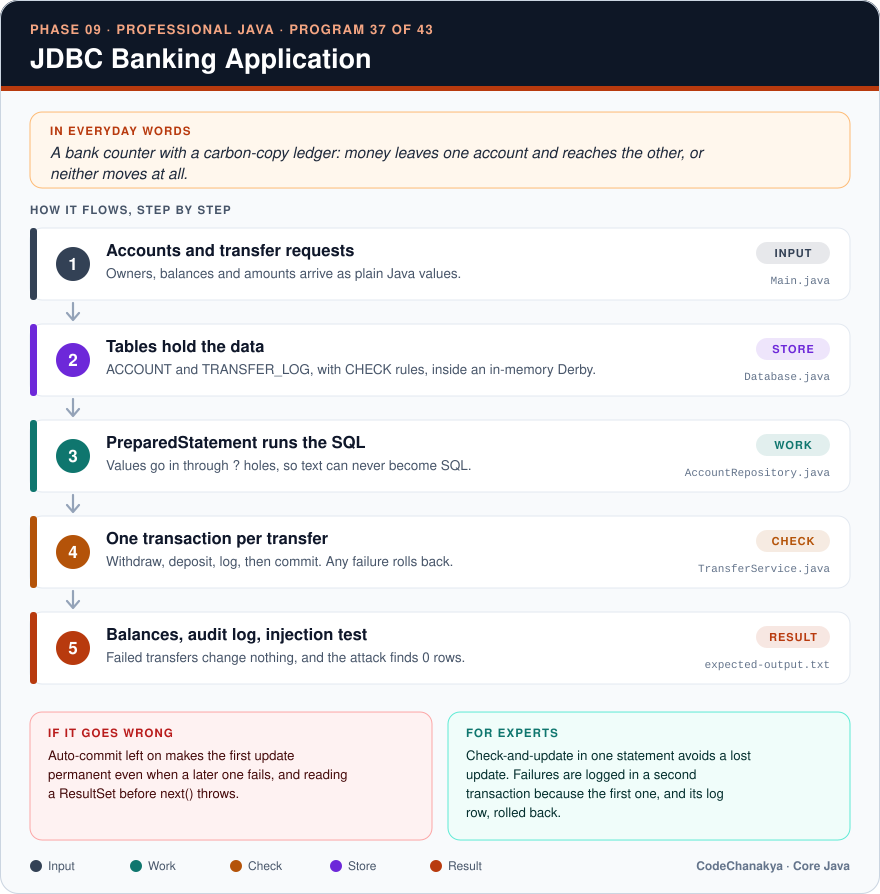

Phase 09 · Professional Java · Program 37 of 43
JDBC Banking Application
The problem
Every program so far forgot everything when it ended. A bank cannot. Balances live in a database, and Java talks to it through JDBC. A transfer must never half happen: if the money leaves one account and the program fails, money has vanished.
Transfers run as one transaction with rollback. Values reach the database only through ? placeholders, a CHECK rule keeps balances above zero, and the program shows an injection attack working on glued text and failing on a placeholder.
See the flow
The whole program as one picture. Read it top to bottom; the colour of each card says what kind of step it is.


If you are new to coding
A bank counter with a carbon-copy ledger: money leaves one account and reaches the other, or neither moves at all.
If you are learning
Follow the numbered cards from top to bottom. Open the file named on each card, run the program, and match its output to the last card.
If you are experienced
Check-and-update in one statement avoids a lost update. Failures are logged in a second transaction because the first one, and its log row, rolled back.
Text version of the flow
- Accounts and transfer requests (input): Owners, balances and amounts arrive as plain Java values.
- Tables hold the data (store): ACCOUNT and TRANSFER_LOG, with CHECK rules, inside an in-memory Derby.
- PreparedStatement runs the SQL (work): Values go in through ? holes, so text can never become SQL.
- One transaction per transfer (check): Withdraw, deposit, log, then commit. Any failure rolls back.
- Balances, audit log, injection test (result): Failed transfers change nothing, and the attack finds 0 rows.
Read in this order
- 1Database.javaThe URL, connections and the CREATE TABLE statements.
- 2AccountRepository.javaAll the SQL about accounts.
- 3TransferService.javaThe transaction. Study this one.
- 4InjectionDemo.javaThe one class that does it wrong, on purpose.
The code
package com.codechanakya.jdbcbank; import java.math.BigDecimal; import java.sql.Connection; import java.sql.SQLException; /** * Moves money between two accounts as one all-or-nothing unit: a transaction. * * <p>A transfer is two updates (take from one account, add to the other) and one log row. If anything * goes wrong after the first update, {@code rollback()} puts everything back as if nothing happened. */ public class TransferService { private final Database database; private final AccountRepository accounts; private final AuditLog log; public TransferService(Database database, AccountRepository accounts, AuditLog log) { this.database = database; this.accounts = accounts; this.log = log; } public void transfer(int from, int to, BigDecimal amount) { if (amount.signum() <= 0) { throw new BankException("A transfer must be for a positive amount, but was " + amount.toPlainString()); } if (from == to) { throw new BankException("Cannot transfer to the same account"); } try (Connection connection = database.connect()) { connection.setAutoCommit(false); // from here on nothing is permanent until commit() try { if (!accounts.withdraw(connection, from, amount)) { throw accounts.find(connection, from).isPresent() ? new InsufficientFundsException(from, amount) : new AccountNotFoundException(from); } if (!accounts.deposit(connection, to, amount)) { throw new AccountNotFoundException(to); // the money is already taken out; rollback returns it } log.record(connection, from, to, amount, "SUCCESS", null); connection.commit(); } catch (RuntimeException e) { connection.rollback(); recordFailure(from, to, amount, e); throw e; } } catch (SQLException e) { throw new DataAccessException("Transfer from " + from + " to " + to, e); } } /** The failed transfer was rolled back, including its log row, so the failure is logged in a fresh transaction. */ private void recordFailure(int from, int to, BigDecimal amount, RuntimeException reason) { try (Connection connection = database.connect()) { log.record(connection, from, to, amount, "FAILED", reason.getMessage()); } catch (SQLException e) { throw new DataAccessException("Logging a failed transfer", e); } } }
package com.codechanakya.jdbcbank; import java.math.BigDecimal; import java.sql.Connection; import java.sql.PreparedStatement; import java.sql.ResultSet; import java.sql.SQLException; import java.sql.Statement; import java.util.ArrayList; import java.util.List; import java.util.Optional; /** * All the SQL about accounts lives here. * * <p>Every method receives the {@link Connection} instead of opening its own. That is deliberate: * the caller decides when a transaction starts and ends, so several repository calls can succeed * or fail together. Every value reaches the database through a {@code ?} placeholder. */ public class AccountRepository { /** Inserts a new account and returns it with the id the database chose. */ public Account open(Connection connection, String owner, BigDecimal opening) { String sql = "INSERT INTO account (owner, balance) VALUES (?, ?)"; try (PreparedStatement statement = connection.prepareStatement(sql, Statement.RETURN_GENERATED_KEYS)) { statement.setString(1, owner); statement.setBigDecimal(2, opening); statement.executeUpdate(); try (ResultSet keys = statement.getGeneratedKeys()) { keys.next(); return new Account(keys.getInt(1), owner, opening.setScale(2)); } } catch (SQLException e) { throw new DataAccessException("Opening an account for " + owner, e); } } /** Inserts many accounts with one round trip to the database (a JDBC batch). */ public int openMany(Connection connection, List<String> owners, BigDecimal opening) { String sql = "INSERT INTO account (owner, balance) VALUES (?, ?)"; try (PreparedStatement statement = connection.prepareStatement(sql)) { for (String owner : owners) { statement.setString(1, owner); statement.setBigDecimal(2, opening); statement.addBatch(); } int inserted = 0; for (int count : statement.executeBatch()) { inserted += count; } return inserted; } catch (SQLException e) { throw new DataAccessException("Opening accounts in a batch", e); } } public Optional<Account> find(Connection connection, int id) { String sql = "SELECT id, owner, balance FROM account WHERE id = ?"; try (PreparedStatement statement = connection.prepareStatement(sql)) { statement.setInt(1, id); try (ResultSet rows = statement.executeQuery()) { return rows.next() ? Optional.of(map(rows)) : Optional.empty(); } } catch (SQLException e) { throw new DataAccessException("Finding account " + id, e); } } public List<Account> findAll(Connection connection) { return query(connection, "SELECT id, owner, balance FROM account ORDER BY id", null); } /** Owners whose name starts with the given text. The text is a parameter, so it can never become SQL. */ public List<Account> findByOwnerPrefix(Connection connection, String prefix) { return query(connection, "SELECT id, owner, balance FROM account WHERE owner LIKE ? ORDER BY id", prefix + "%"); } /** * Takes money out only if there is enough, in one statement. Checking and changing together means * two customers cannot both pass the check and then both spend the same money. * * @return true when the money was taken, false when the account is missing or too poor */ public boolean withdraw(Connection connection, int id, BigDecimal amount) { return update(connection, "UPDATE account SET balance = balance - ? WHERE id = ? AND balance >= ?", amount, id, amount); } /** @return true when the account exists and the money was added */ public boolean deposit(Connection connection, int id, BigDecimal amount) { return update(connection, "UPDATE account SET balance = balance + ? WHERE id = ?", amount, id, null); } public boolean delete(Connection connection, int id) { try (PreparedStatement statement = connection.prepareStatement("DELETE FROM account WHERE id = ?")) { statement.setInt(1, id); return statement.executeUpdate() == 1; } catch (SQLException e) { throw new DataAccessException("Deleting account " + id, e); } } private boolean update(Connection connection, String sql, BigDecimal amount, int id, BigDecimal minimum) { try (PreparedStatement statement = connection.prepareStatement(sql)) { statement.setBigDecimal(1, amount); statement.setInt(2, id); if (minimum != null) { statement.setBigDecimal(3, minimum); } return statement.executeUpdate() == 1; } catch (SQLException e) { throw new DataAccessException("Updating account " + id, e); } } private List<Account> query(Connection connection, String sql, String parameter) { try (PreparedStatement statement = connection.prepareStatement(sql)) { if (parameter != null) { statement.setString(1, parameter); } try (ResultSet rows = statement.executeQuery()) { List<Account> accounts = new ArrayList<>(); while (rows.next()) { accounts.add(map(rows)); } return accounts; } } catch (SQLException e) { throw new DataAccessException("Querying accounts", e); } } private static Account map(ResultSet row) throws SQLException { return new Account(row.getInt("id"), row.getString("owner"), row.getBigDecimal("balance")); } }
Only the key files are shown. The rest are in the repository.
Run it
$ ./run.sh --check
== Opening accounts
1 Asha 1000.00
2 Bilal 250.00
3 Chitra 100.00
4 Dev 100.00
5 Anita 100.00
== Search by owner prefix "A" (placeholder)
1 Asha 1000.00
5 Anita 100.00
== Transfers
1 -> 2 300.00 done
2 -> 3 5000.00 refused: Account 2 cannot pay 5000.00
1 -> 99 50.00 refused: No account with id 99
4 -> 4 10.00 refused: Cannot transfer to the same account
3 -> 4 -5.00 refused: A transfer must be for a positive amount, but was -5.00
== Balances afterwards (the failed transfers changed nothing)
1 Asha 700.00
2 Bilal 550.00
3 Chitra 100.00
4 Dev 100.00
5 Anita 100.00
Total money in the bank: 1550.00
== Audit log
#1 1 -> 2 300.00 SUCCESS
#2 2 -> 3 5000.00 FAILED (Account 2 cannot pay 5000.00)
#3 1 -> 99 50.00 FAILED (No account with id 99)
== SQL injection
Input text : nobody' OR '1'='1
Glued into the SQL : 5 rows leaked
Through a placeholder: 0 rows
OK: output matches expected-output.txt
This is the real output from OpenJDK 21.0.13 on Linux. GitHub Actions confirmed the program on Linux with Java 21 and 25, using real Maven and the real JUnit jar. It has not yet been run on Windows or macOS.
Try it yourself
- BeginnerFind accounts above a balance.
- BeginnerOpen another account and print its id.
- BeginnerChange the database name.
- IntermediateClose an account only when empty.
- IntermediateSearch owners that contain a text.
- ChallengeRun several transfers in one transaction.
Hints and solutions are in the exercises and solutions folders. Try first.
Break it on purpose
Three files: auto-commit left on, reading a ResultSet before next(), and parameter index 0. The README in the broken folder explains each one.